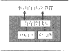

|
|
| 当前位置：电脑报电子版 > 1999 年 > 50 期 > 硬件周刊 > 3D奇兵GP－1 |
| 《 3D奇兵GP－1 》 |
| 今年的COMDEX大展，一款新型的3D图形加速芯片GP－1出现在PC的游戏应用中，它在演示中表现出的性能甚至可以与Voodoo3、G400或Geforce256等主流3D芯片一争高下。研发这款GP－1芯片的GigaPixel公司从1997年成立时开始，就致力于将SGI图形工作站级的3D图形质量与性能带入主流市场。它在技术上只有一个选择，就是改变传统的3D硬件架构，使用创新的3D处理方式发挥最佳的性能。 同近年来涌现的无数电路或IC设计公司一样，GigaPixel采用设计同生产相分离的模式，自己并不生产和加工3D芯片，连提供给最终用户的IC设计也不打算完成——GigaPixel的产品只是提供3D核心的设计，这也称作IP（知识产权）内核。现在欧美十分流行的IP操作模式是随着IC规模的不断增大，设计、生产周期的不断缩短和单芯片系统（需多个公司的技术融合）的不断增加而产生的，像GigaPixel这样专注于技术水准的提升，而把上市产品的设计、生产和市场方面的工作交给更有专长的下游公司去做，这对规模较小的设计公司无疑是较好的选择，这在3D图形硬件市场上尤其重要，因为就算像Intel这样实力近乎“无敌”的公司在3D硬件方面也同样遭遇了挫折。 一、与众不同的GP－1核心技术 由于GigaPixel公司的GP－1设计思路不同于现在主流的（或传统的）3D加速芯片，因而在技术上有众多的不同之处。1．IP内核技术。GP－1是一种3D加速芯片的IP内核技术，它可以被其他厂家用来设计、生产完整的2D/3D/视频芯片，甚至整合型主板芯片组。GigaPixel公司只负责芯片技术的发展、提供驱动软件和向软件（游戏）公司推荐其GP－1系列产品；但使用GP－1内核的公司必须添上自己的2D和视频部分。由于提供了IP内核，各公司在GigaPixel的帮助下可以设计出核心相同、但功能与市场定位各异的芯片，而且开发过程缩短，厂商能够在较短的周期内推出和升级其产品。 2．先进的分块渲染、隐面去除技术。从目前3D芯片技术的发展我们已经看到，3D系统的带宽和复杂性是传统3D体系结构发展的客观障碍，这也是为什么nVidia的GeForce 256芯片的复杂程度已达到2倍于Pentium Ⅲ处理器的难度，由于128位的显示内存接口的带宽限制了内核性能的发挥，仍被指责为“填充率太低”；为什么Bitboys超过1.2G～1.4G Texel/s的Glaze 3D芯片不得不使用512位的嵌入式内存作为Cache；S3的Savage 2000同GeForce 256一样要用到高速的DDR DRAM来提升显示内存带宽。要解决上述问题，最根本的方式就是改变体系结构，像Videologic的Power VR S1/S2两个系列、Stellar使用PixelSquirt结构的VelaTX、微软的Talisman设计（Fujitsu和Trident都试图使用）就是这方面的先锋。 GP－1也并非是第一个采用分块渲染、隐面去除技术的产品，但较为出色的是它解决了以往产品的最大问题：同传统体系结构的兼容性。GP－1先将要渲染的场景（显示屏幕或窗口）分成若干个小块，目的是降低数据量，使内核可以直接存放当前数据而不必频繁访问显示内存和主内存，同时因为处理的简化而使内核复杂程度减小，使并行处理成为可能。并行处理既补偿了逐块处理带来的速度减慢，又有可能进一步提升速度；然后GP－1决定当前块中哪些多边形是可见的，而将不可见的多边形去除，这样它就不用在那些看不见的东西上浪费哪怕一点时间；最后才是传统的渲染过程，包括完整的三角形设置、明暗涂色、纹理贴图和半透明混合几个步骤。所有这些工作完全是内部硬件操作完成，从软件角度看，这一切均被封在“黑盒”中，就像在使用一个普通的3D内核一样。 3．完善的3D特性。GP－1结构的主要优点是它将3D图形系统的带宽需求降到了原有的1/10（最低值），并大大降低了需要处理的数据量，相应IC的逻辑门数据量也同时大大减少。在其他方面，GP－1同主流的3D加速芯片完全没有两样。比如说，GP－1使用的API与Direct 3D和OpenGL均完全兼容。3D特性有32位真彩色渲染、三角形组成的条与块渲染、镜面高光和漫反射明暗涂色、基于顶点的雾化、128位内部数据通道、支持各种类型的内存芯片和支持x86及其他类型的CPU等等；比较特殊的是GP－1还支持3dfx的T－Buffer那样的无损速度、高质量的抗锯齿功能（Anti－Aliasing），另外GP－1还支持集成在芯片中的24位Z－Buffer，并可以再次读出，这样就同普通的外置在显示内存中的Z－Buffer没有什么不同了。 二、GP－1与其它3D芯片的特性比较 虽然像GP－1芯片采用这样的特殊方法进行渲染的3D加速芯片不多，但各有各的特点和长处，下面我们从分块渲染、隐面去除、片上Z－Buffer、纹理压缩、抗锯齿功能和2D/视频等几部分功能来进行相对深入的比较。1．分块渲染。这是非主流的3D芯片的主要共识：PowerVR S1系列使用软件进行分块（32×1像素的块），由于必须依赖于CPU的处理，运行效率较差；PowerVR S2系列改为硬件分块引擎（32×16像素的块），速度已经和传统架构的芯片性能相当；VelaTX使用的块就是单个像素点，采用128路并行结构；Talisman设计则仅仅肯定了分块渲染的重要性，并未公开具体的实现细节；GP－1使用的是硬件实现分块功能，而且完全兼容现有的和将来的软件。 2．隐面去除功能。隐面去除功能的实现基本都是通过图形排序，来确定相互之间的遮挡关系，这里面半透明排序是个难点：PowerVR S1系列使用无限大平面来排序，用软件实现半透明排序，实际效果并不明显；PowerVR S2系列也使用无限大平面来排序，用硬件执行半透明排序；VelaTX使用的是像素点排序；Talisman未提到这个要点；GP－1用的是传统的多边形为单位的排序和硬件半透明排序，解决了以往的难题，也提高了兼容性。 3．片上Z－buffer。Z－Buffer功能可以大大节省带宽（约占总通信量的一半），但PowerVR系列、VelaTX和Talisman都是完全取消了Z－Buffer功能，这使得一些依赖Z－Buffer实现的3D特效难以实现。GP－1的改进是让片上Z－Buffer不但可以写入还能够读出，从而使芯片的3D特效有所改观。 4．纹理压缩。纹理压缩也可以充分节省系统带宽，Talisman采用的技术可达到1/8～1/12最大压缩率；PowerVR S1没有纹理压缩功能；PowerVR S2使用符合DXTC标准的VQ方式可达1/8的最大压缩率；VelaTX也符合DXTC标准；GP－1在这一点上有些不足，未支持纹理压缩（可能到DXTC被广为采用时再加上也未可知）。 5．抗锯齿。抗锯齿功能直到3dfx最近在Voodoo 5中采用才为大家所重视，实际上全景抗锯齿（与较简单的边缘抗锯齿不同）所要求的超大像素填充率，对这些新型3D芯片来讲并不是什么难事，PowerVR S2和VelaTX早已有了（Talisman未表态），GP－1自然也轻易实现了全景抗锯齿。 6．2D/视频。对于完整的显示卡系统来说这两个方面是必不可少的：PowerVR S1系列是3D附加卡，没有2D/视频部分；PowerVR S2系列有完善的2D和DVD动态补偿；Talisman本该有全面的3D/2D/视频功能，但产品中一直没有被开发出来，我们也无缘得见；VelaTX是用来与2D/视频芯片协同工作的纯3D芯片；另外PixelSquirt结构的IP内核也提供给其他厂家使用；GP－1是纯3D内核设计，但可以由其他厂家在做成显示卡时加入2D/视频的支持。 三、结论 GigaPixel GP－1的优点是非传统的3D结构和完善的兼容性带来的高性价比产品（IP的灵活性也可部分看作优点）；它的缺点是需要他人采用其IP设计，而很多3D芯片大厂大多不会这么做，同时还缺少2D和视频部分以及T＆L几何与光照加速，尽管对于高性价芯片T＆L并非必须。但相对传统、复杂、昂贵的GeForce 256和Savage 2000图形芯片，GigaPixel GP－1正是另一个极端——新颖、简洁、廉价。至于用户能不能认同它，就得看市场的“自然”选择了。 |
| 下载本期推荐软件 | 页 首 |
| CPCW网站版权所有，电脑报网站编辑部设计制作发布 |